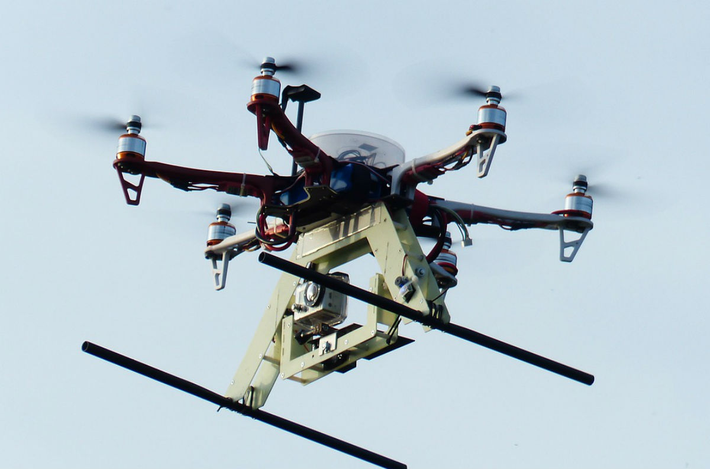

Safety
Current FAA regulations focus heavily on the safety of the drone itself.
For all but recreational users, the drone must first be proved airworthy
and then be granted an FAA certification or an airworthiness statement from
the Department of Defense. |

|
|  |
Privacy
Due to UAS technology’s capability of flying to heights beyond the range of
sight of the average person, possible miniature size, maneuverability, and
decreasing noise production, drones are able to survey places without notice.
This creates significant privacy issues. In the wrong hands, drones could be
used to gather extensive information and even blackmail, from credit card
information to indecent photographs. |